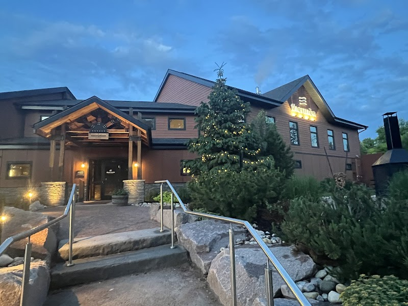

A spa day near the Corydon Airbnb: Thermëa Spa Village

If a night or two on Corydon Avenue leaves you wanting a slower, quieter day, Thermëa Spa Village is a legitimate half-day trip for guests staying at the Corydon/Crescentwood Airbnb — a Nordic-style spa built around a hot-cold-relax circuit rather than a single treatment room. It's not walkable, but it's an easy rideshare or drive away and doesn't require a hotel stay to enjoy.
What it is
Thermëa is at 775 Crescent Drive, on the Assiniboine River in south Winnipeg. The spa village centres on three thermal pools — cold, warm, and hot — plus saunas, aromatic steam rooms, indoor and outdoor rest areas, and a riverside beach area, all meant to be cycled through repeatedly over a few hours rather than visited once. There's an on-site restaurant if you want to make a full afternoon of it, and add-on massages and treatments are available for booking separately.
Good to know: Reservations are required for Spa Village access, not just for treatments — book online before you go rather than trying to walk in. Bathing suits are required throughout the site, cell phones and laptops aren't permitted in the baths/sauna/rest areas, and sandals are required everywhere except inside the saunas.
Getting there and planning around it
Thermëa is a roughly 15–20 minute drive or rideshare from the Corydon/Crescentwood area — comparable to the trip out to Grant Park covered in our liquor store post — so budget for the ride each way rather than treating it as a walk. Hours and current rates change with the season and with treatment packages, so check thermea.com directly before booking. It's open daily, but confirm the current day's schedule online since it can shift around holidays.
Because it's reservation-only, this is a plan-ahead outing rather than a same-day impulse — book a slot for the afternoon or evening, and pair it with a quiet dinner back on Corydon once you're back (see our Corydon patios post if the weather's good).